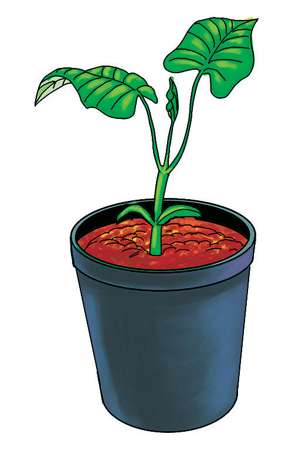
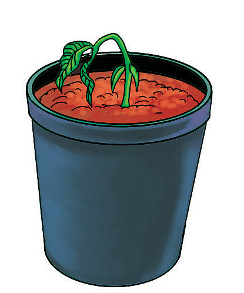

8. Chunguza ukuaji wa mimea katika makopo yote mawili. Je, umeona nini?

Kopo namba 1

Kopo namba 2
Kielelezo namba 1: Umuhimu wa maji katika ukuaji wa mimea
Matokeo: Baada ya siku kumi mmea katika kopo namba 1 umestawi vizuri na kopo namba 2 umesinyaa.
Hitimisho: Katika jaribio hilo tumegundua kuwa maji ni muhimu katika ukuaji wa mimea.
Jaribio la 2: Kuchunguza umuhimu wa joto katika kuota kwa mbegu
Lengo: Kuonesha kuwa joto ni muhimu katika kuota kwa mbegu
Vifaa: Bilauri au chupa mbili, mbegu, pamba, maji, na barafu
Hatua
1. Chukua pamba katika mafungu mawili na iloweshe kwa maji.
2. Chukua bilauri au chupa mbili. Andika herufi A kwenye bilauri au chupa ya kwanza na ya pili andika herufi B. Angalia Kielelezo namba 2.
3. Weka mbegu ya harage ndani ya kila pamba. Kisha weka pamba hizo kwenye bilauri au chupa A na B.
4. Katika bilauri au chupa A weka barafu kila siku asubuhi, mchana na jioni.
5. Katika bilauri au chupa B weka maji yasiyo na barafu.